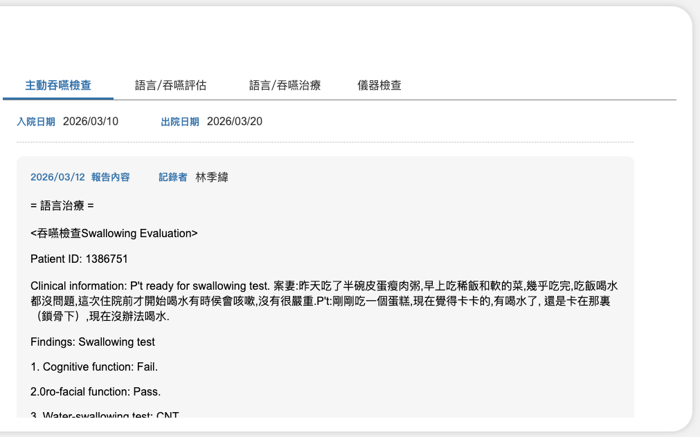
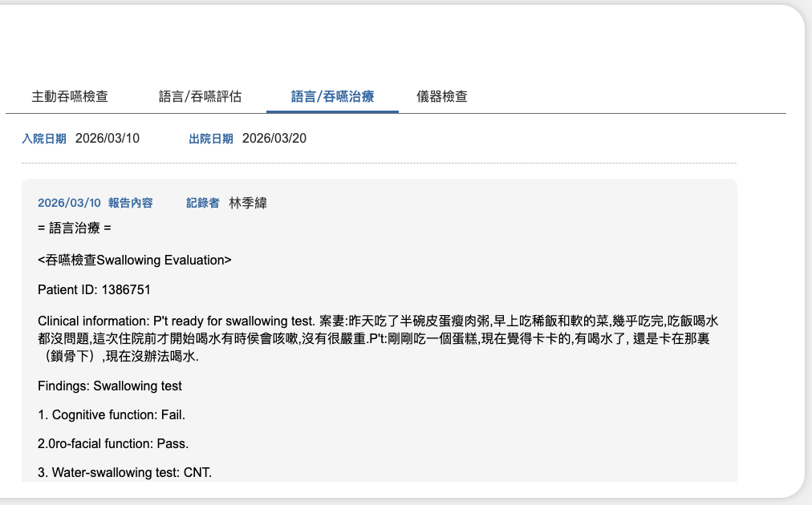
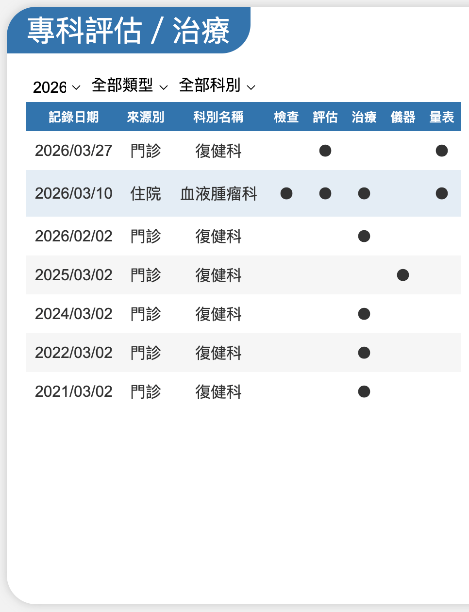
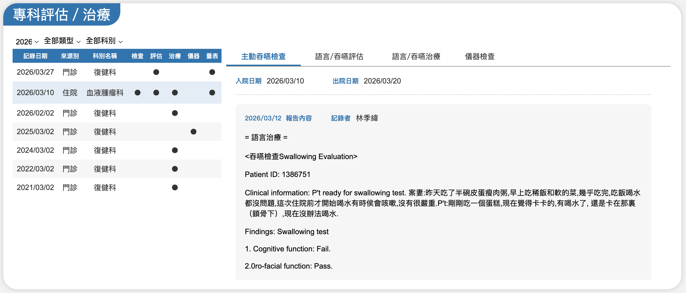
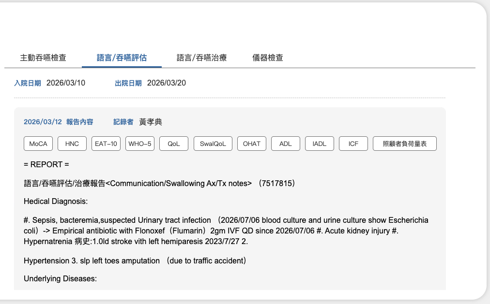
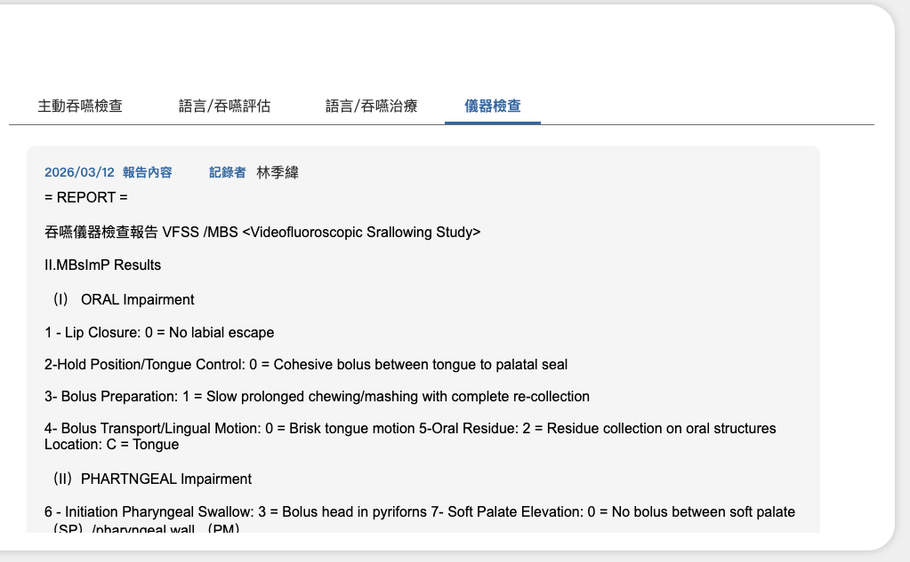

03-1-1 個案狀態管理 - 04專科評估／治療
(左區塊) 治療師執行記錄清單

項目
內容
說明
瀏覽篩選條件
1. 年份
- 近五年
- 2026
- 2025
- 2024
- 2023
- 2022
- 2021
2. 來源別
- 全部來源
- 門診
- 住院
3. 科別
- 全部科別
- …
1. 資料來源：HIS
- 吞檢：檢查系統 ＞ 耳鼻喉科
- 評估：檢查系統 ＞ 復健科
- 治療：復健管理系統 ＞ 復健治療記錄
- MBS：檢查系統 ＞ 復健科
- FEES：檢查系統 ＞ 耳鼻喉科
2. 多項篩選組合以and篩選條件
3. 依治療師實際有填寫服務記錄的類型來顯示，若是住院記錄，從入院到出院的服務記錄都放在一筆資料中。
記錄日當天的服務項目
1. 記錄日期
2. 來源別
3. 科別名稱
4. 服務項目
- 檢查
- 評估
- 治療
- 儀器
- 量表(填寫任一eForm量表)
1. 依日期排序，由新排列到舊。
2. 點擊單列資料觸發onfocus狀態，底色變為 #E4EDF5。
3. 若記錄當日有儲存檢查、評估、治療、儀器(含MBS及FEES)等報告或者有記錄任一eForm量表，在相對應的格子裡顯示一個黑點。
4. 服務項目對應的批價碼：
- 治療：
- S45-024-L
- S45-024-N
- S51-105
- S51-112
- S51-104
- 評估：
- S51-107
- S45-024-L + S48-151-N + S51-107
- S45-024-N + S48-151-N + S51-107
- S45-024-N + S51-107
- 檢查：
- S48-151
- S48-151-N
- MBS： S48-M05 + X75-980
- FEES：S48-M02

項目
內容
說明

就醫時間
1. 住院：入院日期 yyyy/mm/dd hh:mm:ss 及出院日期 yyyy/mm/dd hh:mm:ss
2. 門診：記錄日期 yyyy/mm/dd hh:mm:ss
1. 資料來源：HIS 檢查系統 ＞ 耳鼻喉檢查報告系統。
2. 檢查項目：批價碼 S48-151 及 S48-151-N
2. 撈取治療組別：語言治療
3. 列出由門診或住院的記錄。
報告內容
1. 記錄報告的日期
2. 記錄者
3. 實際的報告內容

項目
內容
說明
就醫時間
1. 住院：入院日期 yyyy/mm/dd hh:mm:ss 及出院日期 yyyy/mm/dd hh:mm:ss
2. 門診：記錄日期 yyyy/mm/dd hh:mm:ss
1. 資料來源：HIS 復健系統 ＞復健治療記錄。
2. 檢查項目：治療相關批價碼。
3. 撈取治療組別：語言治療。
4. 列出由門診或住院的記錄。
報告內容
1. 記錄報告的日期
2. 記錄者
3. 實際的報告內容

瀏覽資料篩選項目
點擊單列，右側出現對應當日的相關資料


項目
內容
說明
就醫時間
1. 住院：入院日期 yyyy/mm/dd hh:mm:ss 及出院日期 yyyy/mm/dd hh:mm:ss
2. 門診：記錄日期 yyyy/mm/dd hh:mm:ss
1. 資料來源：HIS 檢查系統 ＞ 復健科檢查報告系統。
2. 檢查項目：評估相關批價碼
3. 治療組別：語言治療
4. 列出由門診或住院的記錄。
報告內容
1. 記錄報告的日期
2. 記錄者
3. 有填寫的 eForm 量表
4. 實際的報告內容
eForm量表路徑後補

項目
內容
說明

就醫時間
1. 住院：入院日期 yyyy/mm/dd hh:mm:ss 及出院日期 yyyy/mm/dd hh:mm:ss
2. 門診：記錄日期 yyyy/mm/dd hh:mm:ss
MBS：
1. 資料來源：HIS 檢查系統 ＞ 復健科檢查報告系統。
2. 檢查項目：批價碼 S48-M05
3. 治療組別：語言治療
4. 列出由門診或住院的記錄。
FEES
1. 資料來源：HIS 檢查系統 ＞ 耳鼻喉檢查報告系統。
2. 檢查項目：批價碼 S48-M02
2. 撈取治療組別：語言治療
3. 列出由門診或住院的記錄。
報告內容
1. 記錄報告的日期
2. 記錄者
3. 實際的報告內容
(右區塊) Tab01_主動吞嚥檢查
(右區塊) Tab02_語言／吞嚥評估
(右區塊) Tab03_語言／吞嚥治療
(右區塊) Tab04_儀器檢查